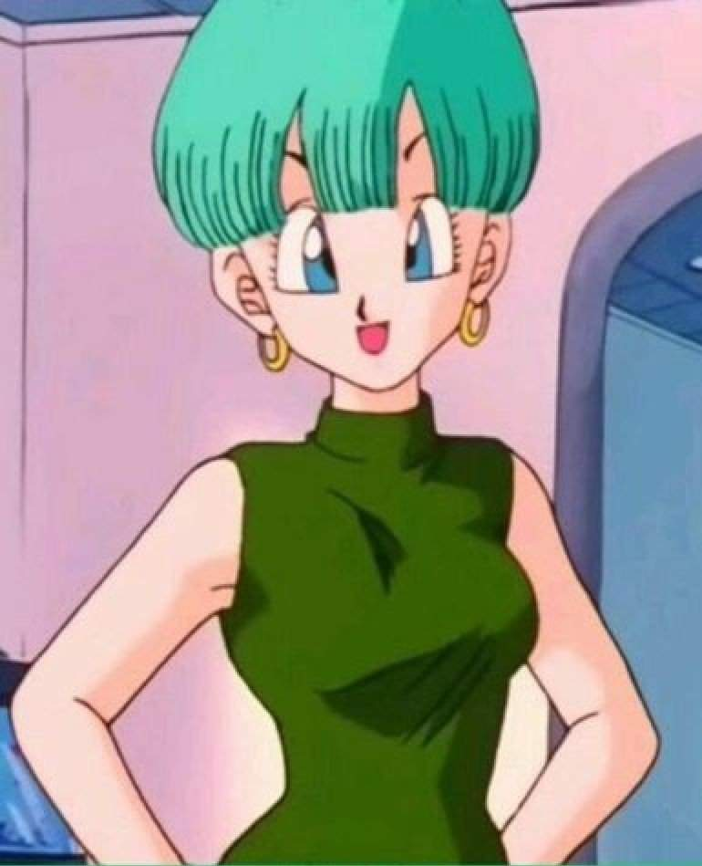
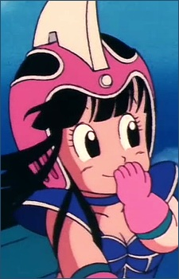
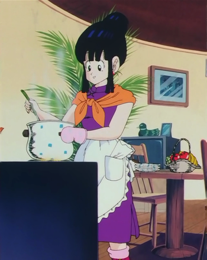
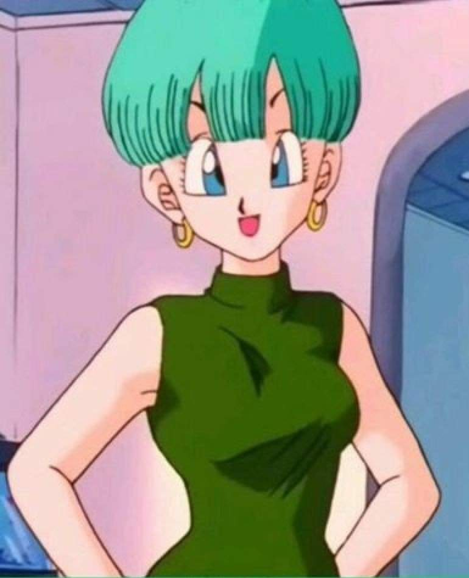
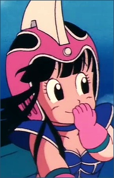
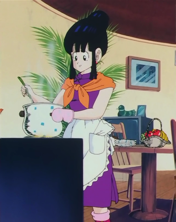
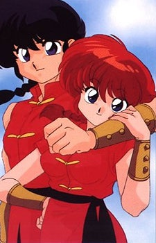
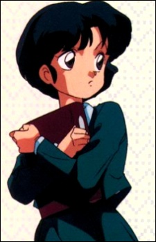
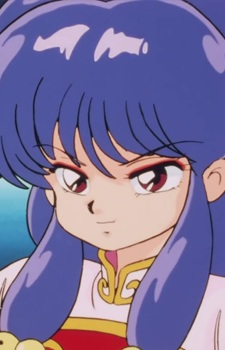
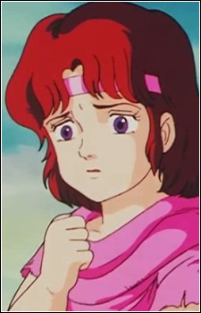

The 80s were known as the Golden Age of anime. With the release of
Star Wars in Japan, the cry for more Space Opera anime was nigh. Not only that,
but with the popularity of anime on the rise VHS were used to create OVAs
(Original Video Animation). Which in the mid 80s, pornographic anime also started
to be made. The creation of pornographic anime (known as hentai to Westerners) is
known to have been partly inspired by the screen captures found of Sayla Moss, from
Mobile Suit Gundam.
Now, that's not the only reason the 80s were refered to as the Golden Age; with the
release of OVAs, there was no specific law against what could or could not be on VHS,
let alone anime, so many directors trying to make a name for themselves started to create
odd anime that would never be shown on TV. Some examples include: Angel Cop,
Mad Bull 34, and Dragon's Heaven.
Lastly, the late 80s brought forth the term "moe" to be used in a common fashion among fans
of anime.
The most popular anime of the 80s include:
(From left to right) The anime being: Dragon Ball Z,
Ranma 1/2 and Fist of the North Star.
First, Dragon Ball Z is an epically popular
anime that is still airing to this day in various sequals and spin-offs.
While the first season Dragon Ball was more cute and adventurous, this season
more battle centric, battling the next baddie of the season. Even though it is
a sequal of the more cutsey first season, this included many of the characters that
were considered "moe" in the first season as older, more mature characters; which older
fans that grew up with the show was very happy to have happen.
 





Second, Ranma 1/2 has a new take on what the fans would take, the main character, Saotome Ranma, has the ability to turn into a girl when in contact with cold water, only to return to being male when dowsed with hot water. However, he isn't the only character considered "moe", for he is surounded by many beautiful girls due to his father, when younger travelling with Ranma around the world, would beg people for food, money, you name it, and in return he would let their daughter marry his son in the future.
  Third, in Fist of the North Star sometime after World War III the story takes place, we follow a man named Ken as he chases his girlfriend's kidnapper. Everyone is shown to be very muscular and rough, however there are cute girls placed into world so the fans would have a cute girl to continue the story along with.
in the 80s, the amount of anime produced increased dramatically, so even if these are known as the top anime, there are many other lists that would list other anime liek Urusei Yatsura as one of the top 3 anime.